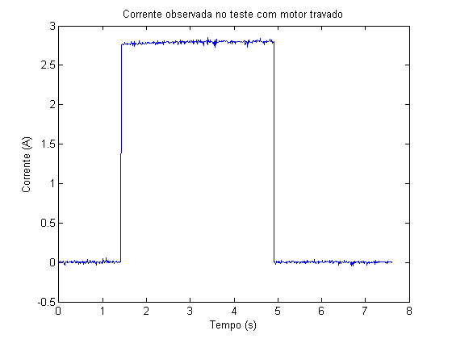
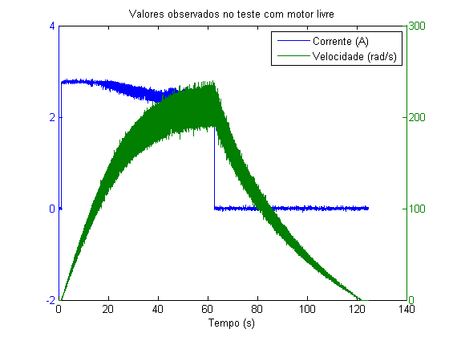
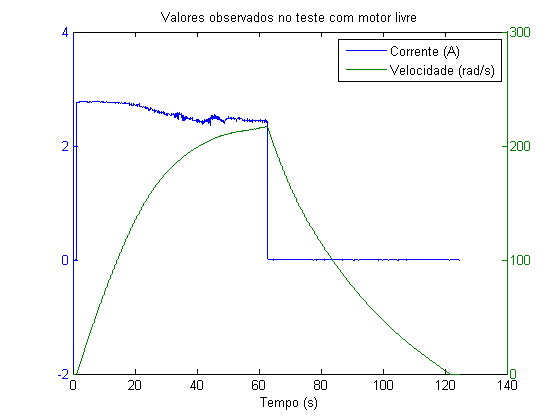
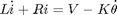
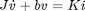
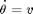
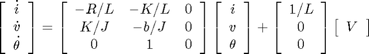
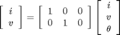
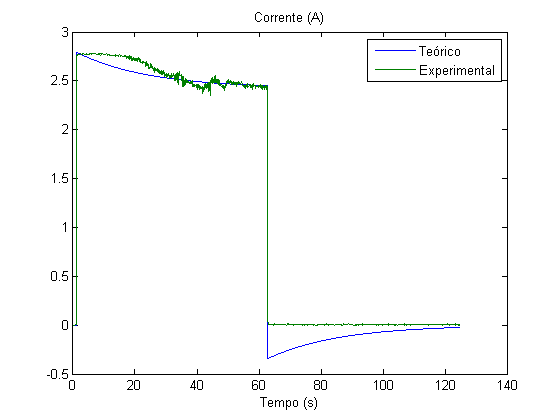
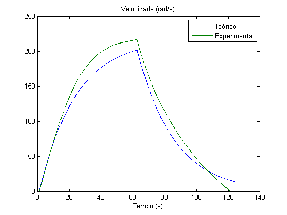

Contents
ES868 – Relatório Lab 6
Identificação de um motor de corrente contínua
Turma A - 23/05/2015
- Augusto Miranda Garcia - 104627
- Guilherme de Oliveira Souza – 117093
- Vinícius Ragazi David - 120258
dt = 10e-3;
Ensaio de motor travado
Dado coletado
i1 = load('dados_coletados/corrente_parado.lvm'); n1 = numel(i1); t1 = linspace(0, (n1-1)*dt, n1)'; plot(t1, i1); title('Corrente observada no teste com motor travado'); xlabel('Tempo (s)'); ylabel('Corrente (A)');

Corrente de regime permanente
I0 = median(i1(i1 > 1)) Rs = 1; V = 12; R = V/I0-Rs
I0 =
2.7948
R =
3.2937
Constante de tempo elétrica
tau_e = 5e-3; % sabemos somente que tau_e < 10ms :/
L = tau_e*(R+Rs)
L =
0.0215
Ensaio de motor livre
Dado coletado
i2 = load('dados_coletados/corrente.lvm'); v2 = load('dados_coletados/velocidade.lvm'); n2 = numel(i2); t2 = linspace(0, (n2-1)*dt, n2)'; plotyy(t2, i2, t2, v2); title('Valores observados no teste com motor livre'); xlabel('Tempo (s)'); legend('Corrente (A)', 'Velocidade (rad/s)');

Filtrado
i2_f = smooth(medfilt1(smooth(i2, 9), 9), 9); v2_f = smooth(medfilt1(smooth(v2, 9), 9), 9); plotyy(t2, i2_f, t2, v2_f); title('Valores observados no teste com motor livre'); xlabel('Tempo (s)'); legend('Corrente (A)', 'Velocidade (rad/s)');

Regime permanente
[v2_inf, index_inf] = max(v2_f) i2_inf = i2_f(index_inf) K = (V - (R+Rs)*i2_inf)/v2_inf b = K*i2_inf/v2_inf
v2_inf =
216.9617
index_inf =
6269
i2_inf =
2.4243
K =
0.0073
b =
8.1920e-05
Constante de tempo mecânica
index_tau_m = find(v2_f(index_inf:end) < 0.3679*v2_inf, 1); tau_m = index_tau_m*dt J = tau_m*b
tau_m =
26.6400
J =
0.0022
Modelo de estado
Juntando as seguintes equações:



Chega-se no modelo de estados


A = [-(R+Rs)/L, -K/L, 0; K/J, -b/J, 0; 0, 1, 0]; B = [1/L; 0; 0]; C = [1, 0, 0; 0, 1, 0]; D = [0; 0]; planta = ss(A, B, C, D)
planta =
a =
x1 x2 x3
x1 -200 -0.3415 0
x2 3.359 -0.03754 0
x3 0 1 0
b =
u1
x1 46.58
x2 0
x3 0
c =
x1 x2 x3
y1 1 0 0
y2 0 1 0
d =
u1
y1 0
y2 0
Continuous-time state-space model.
Comparação teórico x real
v2_t = V*(i2_f>1); [Y, T] = lsim(planta, v2_t, t2); plot(T, Y(:,1), t2, i2_f); title('Corrente (A)'); legend('Teórico', 'Experimental'); xlabel('Tempo (s)'); snapnow; plot(T, Y(:,2), t2, v2_f); title('Velocidade (rad/s)'); legend('Teórico', 'Experimental'); xlabel('Tempo (s)');

